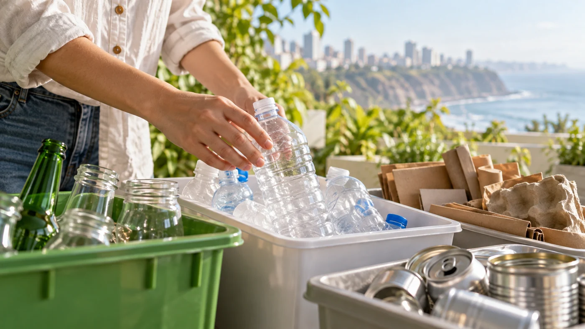

Botellas de plástico
Categoría: Plásticos
Botellas de agua, gaseosas y jugos. Deben entregarse vacías, enjuagadas y aplastadas.
Aprende a reconocer qué materiales se pueden reciclar en casa, cómo prepararlos fácilmente y dónde entregarlos de manera segura.

Escribe el nombre del objeto o utiliza una opción rápida para consultar su reciclabilidad:
Selecciona un grupo para conocer las condiciones de entrega:
Categoría: Plásticos
Botellas de agua, gaseosas y jugos. Deben entregarse vacías, enjuagadas y aplastadas.
Categoría: Papel y Cartón
Envases de cartón para bebidas. Levanta las esquinas, enjuaga por dentro y aplana la caja.
Categoría: Residuos especiales
Déjalo enfriar, cuela los restos de comida y guárdalo en una botella cerrada. Nunca lo tires al lavadero.
Categoría: Vidrio
Envases de conservas y bebidas sanos y limpios. Entrégalos sin chapas ni tapas de metal.
Categoría: Metales
Latas de atún, leche y bebidas. Enjuágalas bien y aplástalas un poco para ahorrar espacio.
Categoría: Residuos especiales
Contienen elementos químicos contaminantes. No van a la basura común; déjalas en contenedores especiales.
Sigue estos 4 pasos básicos antes de llevarla al centro de acopio:

Estaciones limpias y lugares autorizados en la ciudad:
Estado: Abierto ahora
Ubicación: Calle Ramón Ribeyro cdra. 1, Miraflores · (0.8 km de ti)
Horario: Lunes a Sábado de 8:00 am a 4:00 pm
Qué reciben: Botellas de plástico, Cartón, Vidrio, Latas.
Estado: Abierto ahora
Ubicación: Calle Manuel Anzieta s/n, San Isidro · (2.3 km de ti)
Horario: Lunes a Viernes de 9:00 am a 5:00 pm
Qué reciben: Plásticos, Vidrio, Pequeños aparatos.
Estado: Cerrado hoy
Ubicación: Av. Caminos del Inca cdra. 21, Surco · (4.5 km de ti)
Horario: Martes a Domingo de 8:30 am a 3:30 pm
Qué reciben: Papel, Cartón, Plásticos, Latas.
Actualización de horarios y condiciones de recepción de residuos: